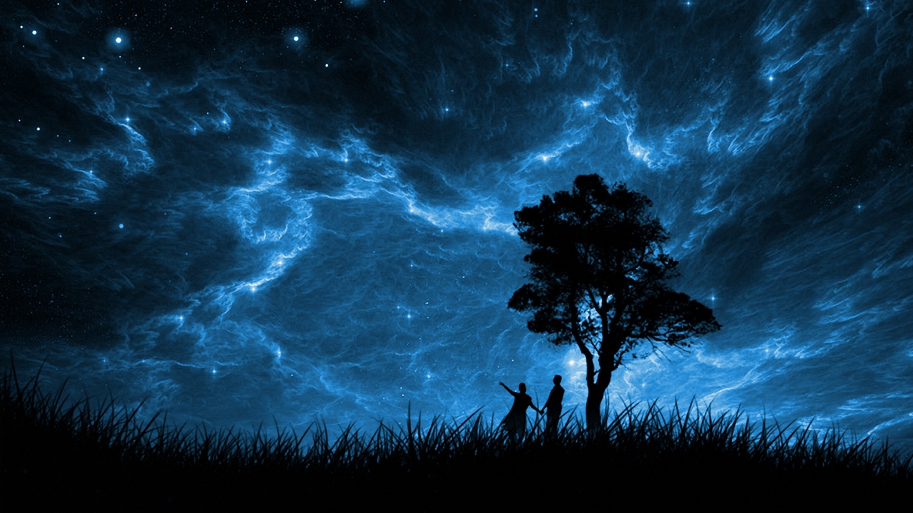
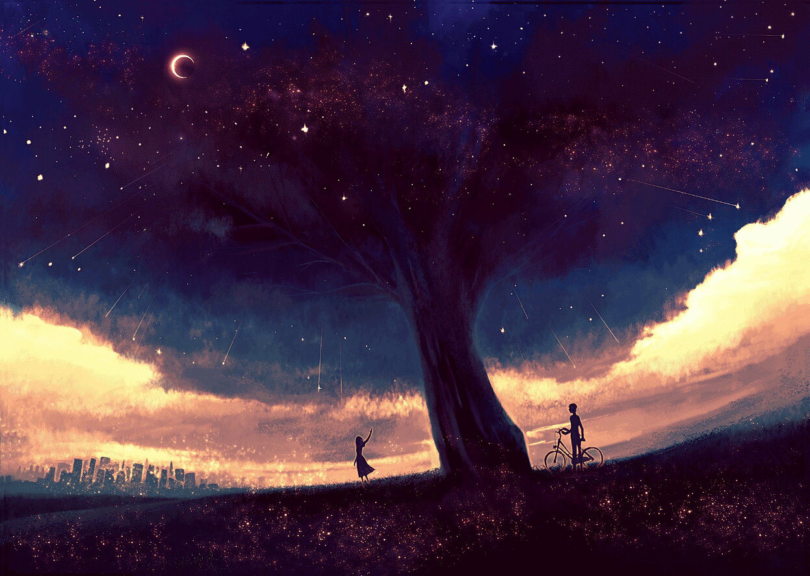

Touchwords
Touch your heart with my singular words.
At a glance
It was almost the time of Durga Pujo, when I commenced hopping from South city to Forum, Acropolis to Mani square in quest of clothes, shoes and accessories to show off, during those unforgettable days of Pujo.
Continue ReadingOnce Again
Was it you or your aura, Your glittering charm or your speech, That kept me still, Fettered into a chain of bliss? How could one tell One glimpse of those spellbinding eyes Could make every part of my body
Continue ReadingDifferent
The atmosphere filled with your scent, Could do no more than make me sigh; Sigh in pleasure. Your eyes did expound a lot more, Than what Faraday could ever attempt to do. The grin that drove out the monotony,
Continue ReadingMy Autumn
You’re like the autumn leaves, The reddish hue mixed with a tincture of yellow Seems to disappear every now and then, Making this thirsty soul crave for more. I cherish the raindrops Rolling down my miles of skin,
Continue Reading